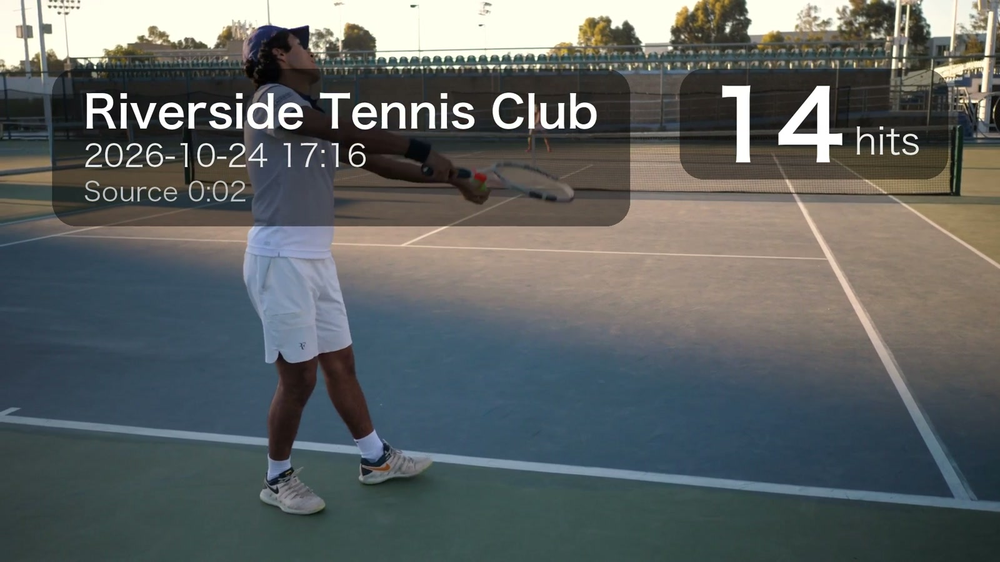

Open source · runs on your Mac · works with your AI agent
A 47-minute
tennis recording in.
A 3-minute
highlight reel out.
Tennis Evolution cuts every rally out of a long phone recording, burns the hit count, venue, wall clock and source timestamp onto the picture, and checks the result before handing it over. Your footage never leaves your machine — no upload, no account, no cloud.
01 / Try it
Drag the slider. Watch the reel build itself.
This is the reference recording: 47 minutes, 131 rallies. Pick how many to keep and how to order them — the timeline, the reel and the corner label update exactly the way the tool will cut them.
- Reel length
- 3:49
- Rallies
- 5/ 131
- Hits on screen
- 151
Riverside Tennis Club
2026-10-24 17:44
Source 27:14
40hits
Rallies beyond five are a Pro feature — one payment, every rally, no watermark.
Unlock Pro · $1902 / Labels
Same footage. The labels do the talking.
Every segment carries the hit count, the venue, the wall clock of that rally and where it came from in the source file — so a clip still makes sense once it's out of context.
Switching keeps the playback position, so you see the same frame with and without the overlay. PNG overlay · Pillow
03 / The reel
Watch it, then run it on your own recording.
Every tennis highlight video here is the tool's real output, not a mock-up. The hero numbers come from one 47-minute phone recording; the player below is a shorter CC0 sample cut by the same pipeline.
Sample footage: CC0 clips run through the same pipeline — source 2:16, four rallies, reel 1:39.
These are lossless stream copies — cut on keyframes, nothing is re-encoded. The demo source is SDR; on a real iPhone HDR recording the 10-bit HLG frames and rotation metadata pass through untouched.
04 / Pipeline
Four moves, and one of them is refusing a shortcut.
The interesting decisions are all at the edges: where a cut is allowed to land, how the segments get joined, and what counts as done.
-
txt · json
Bring a highlight list
Any tool that emits time ranges works: sliceapp's export, your own detector, or a text file you typed. Detection is deliberately out of scope.
-
-c copy
Cut on keyframes, not on milliseconds
Stream copy is bit-exact and keeps HDR, 10-bit and rotation metadata; cuts snap to the nearest keyframe, which is why the pipeline never re-encodes a clip.
-
trim → concat
Assemble in one pass
Rallies are trimmed and concatenated into a single encode. The obvious concat-demuxer shortcut produced a permanent 1.01 s audio offset and broken HEVC reference frames, so this tool refuses it and reports the problem instead.
-
manifest.json
Verify before it counts as done
Every output is checked for clean decode, zero start offset, A/V duration match, non-black first/last frames and non-silent audio. Failing checks make the command exit non-zero.
05 / Output
What you get.
One directory per run. Nothing is hidden in a project file: the reel, the cuts, the label layers and the report sit side by side — a tennis rally cutter that hands you files, not a subscription.
reel_labeled.mp4The reel, labels burned in — the file you upload.reel_plain.mp4Same assembly, clean picture, for your own titles.clips/One lossless cut per rally. Original HDR, rotation burned in.labels/*.pngTransparent overlays, reusable in any editor.highlights.normalized.jsonThe segment list actually used.manifest.jsonEvery parameter and every check result.
The manifest is the contract: every parameter and every check result, machine-readable. A non-zero exit code means a check failed — scripts and agents can trust the run without watching the video.
decode clean
start offset
a/v duration match
expected duration
frame not black
audio not silent
The label, enlarged

- Hits
- 14The shot count, and the sort key for the reel.
- Venue
- Whatever you pass with
--place— Riverside Tennis Club in this sample. - Wall clock
- Recording start plus the rally offset, in the timezone you choose.
- Source
- 0:02Where the rally sits in the original file.
06 / Install
Install in one line.
Not on PyPI yet, so install straight from the repository. ffmpeg has to be on your PATH — the tool will not quietly bundle 40 MB of it for you.
Terminal — install + run
# ffmpeg first: brew install ffmpeg · sudo apt install ffmpeg fonts-noto-cjk
pipx install git+https://github.com/bobobo2026/tennis-evolution
# a highlight list from sliceapp, your detector, or by hand
tennis-evolution all IMG_5155.MOV --highlights highlights.txt --top 5 --place "Your Club" --timezone Asia/Shanghai --outdir outRequires Python 3.11+ and ffmpeg/ffprobe. macOS and Linux. Source, issues and the full pipeline notes live on GitHub.
07 / Agents
Or just ask your agent.
Tennis Evolution ships an MCP server, a Claude Code plugin and a portable skill. Any agent that speaks MCP — Claude, Cursor, Codex, Windsurf — can probe the file, rank the rallies, render the reel and read the self-checks. The free version works from every agent.
Cut the five longest rallies out of ~/Movies/match.MOV and label them Riverside Tennis Club.
probe_video47:29 · HEVC 10-bit HLG · portrait 1080×1920
rank_highlights131 rallies · keeping 40, 36, 27, 24, 24 hits
start_highlight_reeljob 3f9c21 · running in the background
get_jobdone · verify PASS · reel_labeled.mp4 (3:49)
Done. Your reel is at ~/Movies/out/reel_labeled.mp4 — 5 rallies, 3:49, every self-check passed.
Terminal
claude mcp add tennis-evolution -- uvx --from git+https://github.com/bobobo2026/tennis-evolution tennis-evolution mcpadd to claude_desktop_config.json / .cursor/mcp.json
{
"mcpServers": {
"tennis-evolution": {
"command": "uvx",
"args": ["--from", "git+https://github.com/bobobo2026/tennis-evolution",
"tennis-evolution", "mcp"]
}
}
}Claude Code
/plugin marketplace add bobobo2026/tennis-evolution
/plugin install tennis-evolution@tennis-evolutionSKILL.md
# copy the skill into any agent that loads SKILL.md files
git clone https://github.com/bobobo2026/tennis-evolution && cp -r tennis-evolution/skills/tennis-evolution ~/.claude/skills/tools: probe_video · rank_highlights · start_highlight_reel · get_job · verify_video · license_status · activate_license
08 / Pricing
Free to run. $19 to unlock every rally.
Rendering always happens on your machine, so there is no subscription to pay for servers. Pro is a one-time licence key that is verified offline.
Free
$0forever
- Local render, nothing uploaded
- MCP server, CLI and local web UI
- Lossless rally clips + self-checks
- Up to 5 rallies per reel
- Small “free” watermark on the labeled reel
Most picked
Pro
$19one-time · ¥138
- Everything in Free
- Every rally — all 131, not just 5
- No watermark
- Offline licence key, all your machines
- Free updates for the whole 0.x line
Your key appears on the next page right after payment. Card payments are handled by Creem (merchant of record, taxes included); WeChat and Alipay by afdian.
09 / Privacy
The footage never leaves the machine.
A full match contains your friends, your club and your mistakes. Local-first is not a slogan here: there is no server to send it to, and no queue to wait in.
Your footage stays on disk
No account, no queue
Free version, MIT source
Works on HDR iPhone video
10 / FAQ
Questions that keep coming up.
Short answers below. The longer reasoning, including the ffmpeg arguments and the failures that shaped them, is in the repository.
Do I need a hit detector?
No. Bring any list of time ranges: sliceapp's export, your own detector, or a text file you typed by hand. Detection is deliberately out of scope, because a hit counter tuned to one venue's reverb makes the whole pipeline brittle. If you already export ranges from sliceapp, this doubles as a slice app alternative: the export drops straight in.
Does it work with iPhone HDR video?
Yes. iPhone tennis video highlights keep their HLG tags, 10-bit colour and rotation metadata: the lossless cuts are untouched, and the reel comes out as an HDR HEVC tennis video at the same 10-bit depth. Dolby Vision's dynamic metadata cannot be written back by x265 and is dropped on re-encode; the HDR10/HLG base layer stays intact.
Is it macOS only?
The CLI runs on macOS and Linux with ffmpeg on PATH and Python 3.11 or newer. A packaged Mac app is on the roadmap; star the repository to follow it.
Can I try it without installing?
Every clip on this page is pre-rendered, so you can judge the output first. There is no online renderer on purpose: generating one means uploading an hour of your footage to someone else's server.
How long does it take?
A 47-minute source with five rallies takes about 3 to 5 minutes end to end on an M-series Mac, almost all of it the single x265 encode. The local web UI shows live progress for each stage.
What does it cost?
The free version costs nothing: local rendering, the MCP server and every self-check, up to five rallies per reel with a small watermark. Pro is a one-time $19 (¥138) licence key that unlocks every rally and removes the watermark. Pay by card, Apple Pay, Google Pay, WeChat or Alipay; the key is verified offline, so nothing ever phones home.
Can ChatGPT, Claude or Cursor make a tennis highlight video for me?
Yes, through MCP. Add the Tennis Evolution MCP server (one line for Claude Code, a JSON snippet for Claude Desktop, Cursor, Codex or Windsurf) and ask in plain words, for example “cut the five longest rallies from match.MOV and label them with my club name”. The agent calls probe_video, rank_highlights, start_highlight_reel and get_job, and reports the self-check result. Rendering still runs on your own computer.
What does Pro add, and is it a subscription?
No subscription. Pro is a single $19 payment for an offline licence key: every rally instead of five, no watermark, use it on all your machines, free updates for the 0.x line. Activate it with “tennis-evolution license activate KEY” or ask your agent to call activate_license.
Something else? Open an issue on GitHub ↗